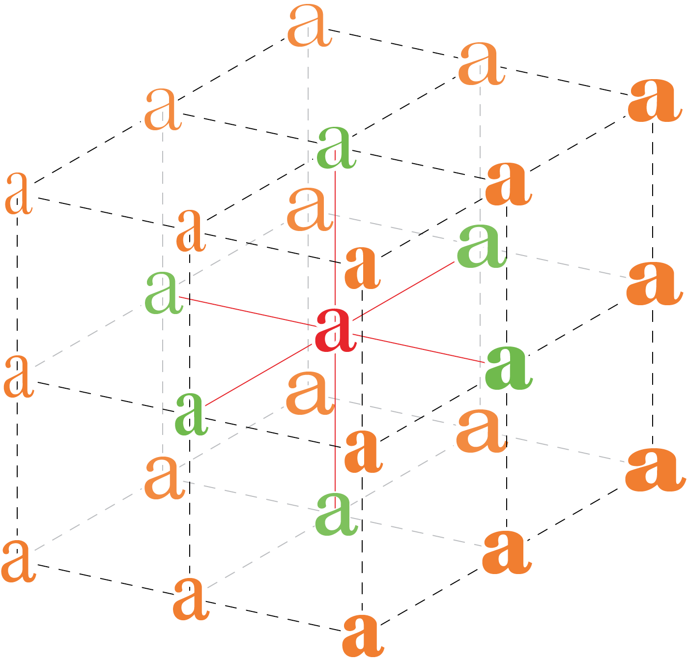
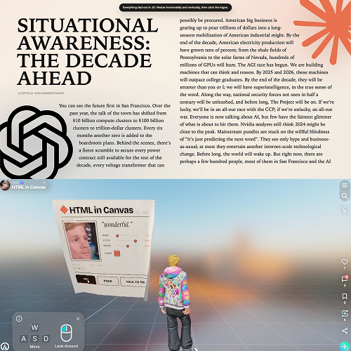

저를
소개합니다
간단한 자기소개
제 이름은 '장예원'입니다. 한자로는 張睿元 이라고 씁니다. 26학번 신입생이에요.
좋아하는 것
차 마시는 걸 좋아해요~ 매일 집에서 찻잎을 우려먹어요. 그리고 jpop도 많이 들어요.

생각보다 별로 할 말이 없네요..
CSS에는 원래 @font-face 규칙이 있었지만 저작권 문제로 오랫동안 사용하기 어려웠다. 하지만 2008년 이후 사파리와 파이어폭스가 @font-face 규칙을 지원하기 시작했다. 이에 힘입어 2009년 5월, 제프리 빈이 타입킷(Typekit)을 선보였다. 이후 @font-face 규칙은 인터넷 익스플로러, 파이어폭스, 크롬, 사파리, 오페라 등 모든 주요 브라우저와 iOS 사파리, 안드로이드 크롬 같은 모바일 브라우저에서도 지원되기에 이르렀다. 타입킷 외에도 많은 타입 파운드리가 웹폰트 서비스를 제공하기 시작하면서, 불과 몇 년 사이 웹폰트는 웹 디자인 세계를 휩쓸었다.
배리어블 폰트의 등장
10년 전인 2016년, ATypI(국제타이포그라피협회) 콘퍼런스에서 애플, 구글, 마이크로소프트, 어도비가 힘을 합쳐 배리어블 폰트(Variable Fonts)를 선보였다. 배리어블 폰트가 중요한 이유는 파일 용량을 크게 늘리지 않으면서도 여러 굵기와 스타일을 하나의 파일에 담을 수 있다는 점, 즉 매우 효율적이라는 데 있다.

동시대의 웹타이포그라피
